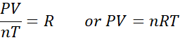
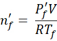
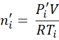
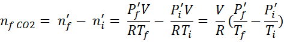
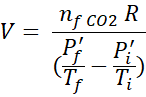
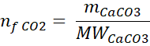
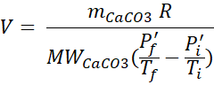
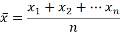

Table of Contents
After having completed this lab experiment, students will
Know:
Understand:
Do:
Chemistry: Atoms First from OpenStax, Print ISBN 1947172646, Digital ISBN 1947172638, chapter 8.2
TO DO before coming to the lab:
TO DO during the lab:
TO DO after the lab:
This lab grade is 30 points total. The breakdown for this lab is as follows.
|
Points |
Item |
Requirements |
|
2 points |
Personalized procedure |
Signed by your TA at the beginning of the lab and submitted electronically on MyCourses within 2 days from your lab |
|
5 points |
Pre-Lab quiz |
On-line before the lab starts, to be able to access the Data Sheet and the Report Forms |
|
3 points |
Datasheet |
Signed by your TA at the end of the lab and submitted electronically on MyCourses within 2 days from the lab |
|
20 marks |
Lab report |
Filled-in individually after the lab and submitted on MyCourses in .pdf format within 2 days after the lab |
The ideal gas law relates four independent properties of gas, - pressure (P), volume (V), temperature (T) and quantity (n moles) at any time. The ideal gas law equation is expressed as

Where
P: pressure (Pa)
V: volume (m3)
T: temperature (K)
n: number of moles
R: ideal gas constant 8.314 J/mol K
R is independent of the nature of gas and is the same for all gases.
The ideal gas law allows to find the fourth parameter if any other three are known. Also, it can be also used in stoichiometry calculations for the reactions that produce gas.
In this experiment you will use the ideal gas law to determine how much CaCO3 is present in an antacid medication and express it as a percent by weight (w/w %).
Several commercial brands of antacid tablets such as TUMS contain CaCO3, which will react with the stomach acid once ingested and thus reduce the acidity in the stomach by consuming an excess of acid. CO2 (carbon dioxide) gas is produced during the reaction:
CaCO3 + 2HCl → CaCl2 + CO2 + H2O
These antacid medications do not consist purely of CaCO3, but also contain other materials such as binders, coloring, and flavorings that assist in formulation of antacid tables.
The ideal gas law can be used to determine an exact amount of CaCO3 in a tablet by performing the reaction with HCl in a closed system, where the pressure, volume and temperature are known.
If we run a reaction in a closed reaction flask with a defined volume, we can measure the P and T at the beginning and at the end of the reaction and determine how much CO2 has been produced during the reaction with HCl. We can then calculate how much CaCO3 is needed to produce this amount of CO2.
The apparatus set-up for this lab is shown on Figure 1.
The Erlenmeyer flask is used as a reaction flask. It is equipped with a three holed rubber stopper through which the three lines are inserted:
1) the pressure sensor probe connected to the Vernier tablet
2) the temperature probe connected to the Vernier tablet
3) the rubber tube connected to a vacuum line and equipped with a stopcock that can be closed and opened to create a closed system
First, the vacuum line is opened to remove air from the reaction flask and to lower the pressure to about 20-30 kPa.
Remember that standard atmospheric pressure is 1 atm or 101.3 kPa.
Since we are producing gas in this reaction, we do not want the pressure in our closed system to go above the atmospheric pressure, to avoid potential flask fracture.
Once the pressure inside the flask is lowered, then the reaction is initiated and the change in pressure and temperature is monitored by the probes inserted in the rubber stopper.
We are using a 125 mL Erlenmeyer flask, however, it is not an exact volume of the flask but rather and indication of how much liquid this flask can contain. We do not know exact volume of our system, which the gas will occupy, i.e. the flask equipped with the stopper and the probes.
However, the volume can be calculated using the ideal gas law if we know the other three parameters, i.e., P, T and n.
Therefore, if we start from a known amount of CaCO3, we will produce a known amount of CO2 and will be able to determine the volume of the system, which is constant, provided we measure T and P at the beginning and at the end of the reaction.
The reactants are placed in the Erlenmeyer flask and most of the air is removed through the vacuum line until the the pressure drops to 20-30 kPa (Figure 2).
At this point, there is still some air left in the flask. There is always water vapor present in the air as well.
Based on the law of partial pressures (Dalton law), the total pressure P in the flask is equal to a sum of all the partial pressures of the individual gases present in the gas mixture.
Thus, the pressure in the flask before the reaction, Pi equals:
Pi = pi air + pi H2O
Once the reagents are mixed together, they react quickly to produce CO2, which will raise the pressure in the flask (Remember, it is a closed system). Now, the pressure in the flask, Pf equals:
Pf = Pf air + Pf H2O + Pf CO2
The number of gas molecules from the air stays the same throughout the reaction, whereas the amount of molecules of water in the vapor phase might change depending on the temperature (some molecules might add to the vapor phase if the T is higher and some might condense to the liquid phase if the T is lower). To subtract the water vapor contribution to the initial and final pressures, we can check the water vapor pressure at the initial and final temperatures (Table 1) and then subtract these values from Pi and Pf. This will give us new initial (P'i) and final (P'f) pressures:
P'i = Pi - Pi H2O = Pi air
P'f = Pf - Pf H2O = Pf air + Pf CO2
Thus, n'i = ni air and n'f = nf air + nf CO2
As nf air = ni air then
n'f - n'i = nf air + nf CO2 - ni air = nf CO2
Using the ideal gas law we can now express n'f as

and n'i as

Then


If we use a known mass of CaCO3, we can calculate the nfCO2 and then, using the equation above, calculate the V of our system.
 then

If our CaCO3 sample is not 100% pure, we have to fist calculate mCaCO3 using the following formula:
mCaCO3 = m sample x w/w%(CaCO3)
Once we know the exact volume of the system, we can the perform the reaction using TUMS tables with unknown CaCO3 content and determine the amount of CO2 produced by measuring the P and T before and after the reaction and applying the equation for nfCO2 we derived above.
In this lab, you are going to perform your measurements THREE times for both, finding the volume of your system and determining the w/w% concentration of CaCO3 in a TAMS tablet.
WHY DO WE REPEAT THE MEASURMENTS?
One of the best ways to evaluate the reliability of a measurement is to repeat it several times and perform a statistical analysis on the obtained data set to see what is a statistical error for these measurements.
When we are evaluating how close to each other the measurements are, i.e. REPRODUCIBILITY of the measurements, we are looking at PRECISION. When we are evaluating how close our measurements are to a known value, we are looking at ACCURACY.
Here is an example of PRECISION in dart throwing. All the darts are close to each other. Precision does not automatically mean accuracy. As we can see from this picture, the darts are quite far from the center.
The precision of the measurements is related to RANDOM ERRORS during measurements, like a discrepancy in scale reading, or how fast we stop a stop watch if we are measuring a reaction duration, for example. We can detect random errors by repeating the measurements.
If we do repeated measurements, we need to decide what is our best estimated value for the measurement we are trying to reproduce.
Normally, we will use an average or mean value of all our measurements as our best estimate for the value we are trying to determine by performing the measurement.

The calculation of standard deviation (SD) helps us determine the PRECISION of our results. Measurements with relatively small standard deviations are more precise, while those with larger standard deviations are less precise. Standard deviation is calculated by first calculating the deviations from the mean for each of your measurements. You then square all the deviations and then add all the squared values together. You then divide this sum by N-1 where N is the number of measurements. Finally, take the square root of the resulting number.
\begin{equation} s = \sqrt{\frac{1}{N-1} \sum_{i=1}^N (x_i - \overline{x})^2} \tag{1} \end{equation}
Where:
| \(s\) | : | standard deviation of sample |
| \(N\) | : | the number of samples |
| \(\overline{x}\) | : | mean value of the trials |
| \(x_1\), \(x_2\), ..., \(x_i\) | : | the values from the trials |
SD is a better indicator of uncertainty than the significant figures. When you calculate the mean of a series of measurements and the standard deviation of that set of measurements, you won't be using significant figures rules in order to determine how many decimal points to use for the average; instead, you will use the SD. Generally, it is customary to use ONE significant figure for SD itself. Then, the average value will be reported to the same number of decimal points as the SD.
The ratio of the SD to the average value is called the relative standard deviation (RSD); if we convert it to a percent, then we are calculating the percent relative standard deviation. %RSD can give us a better sense of the precision. In this lab course we will report %RSD to 2 significant figures.
\begin{equation}\label{eq:rel} \% RSD = s/\overline{x} \times 100\% \tag{2} \end{equation}
Where:
| \(\% RSD\) | : | relative standard deviation |
| \(s\) | : | standard deviation of a sample |
| \(\overline{x}\) | : | mean value of the trials |
| Item | Quantity |
|---|---|
| 125 mL Erlenmeyer flask | 1 |
| small vial | 1 |
| spatula/scoopula | 1 |
| weighing boat | 1 |
| stirring plate | 1 |
| analytical balance | 1 |
| clamps | 1 |
| tweezers | 1 |
|
three holed rubber stopper |
1 |
| 2-way valve | 1 |
| temperature sensor | 1 |
| pressure sensor | 1 |
| Vernier tablet | 1 |
| Chemical | Quantity |
|---|---|
| CaCO3 (99.9%) | ~ 2.5 g |
| Hydrochloric acid, 4.5 M | 6 mL |
| antacid tablet such as TUMS or an equivalent | 1 |
Chemical Safety and SDS Sheets
Vernier ID
Each Vernier interface is identified by a number in the top right corner. Make sure to mark this number on the data sheet so that we can identify any problems with the experimental setup.
Remember, that we can only use our system to determine the amount of CO2 produced if the system does not exchange gases with the environment. It means that the system should have an leaks once the vacuum line valve is closed.
WHAT TO DO IF THE PRESSURE DOES NOT STABILIZE?
If the system is not tightly sealed, the pressure will not stabilize. You must find and seal any leaks before going further. Most of the time, the leak is found around the rubber stopper. Press the stopper down firmly to seal the gap between the flask and stopper. If you cannot find and seal your leak, consult your TA.
Wet Glassware
It is not crucial for your glassware to be dry. Calcium carbonate does not dissolve appreciably in water, so some residual water should have no impact on your experiment.
| Temperature | Vapor Pressure | Temperature | Vapor Pressure |
|---|---|---|---|
| ℃ | kPa | ℃ | kPa |
| 16.0 | 1.81 | 25.0 | 3.16 |
| 16.5 | 1.87 | 25.5 | 3.27 |
| 17.0 | 1.93 | 26.0 | 3.36 |
| 17.5 | 2.00 | 26.5 | 3.47 |
| 18.0 | 2.07 | 27.0 | 3.56 |
| 18.5 | 2.13 | 27.5 | 3.67 |
| 19.0 | 2.20 | 28.0 | 3.77 |
| 19.5 | 2.27 | 28.5 | 3.89 |
| 20.0 | 2.33 | 29.0 | 4.03 |
| 20.5 | 2.41 | 29.5 | 4.12 |
| 21.0 | 2.49 | 30.0 | 4.22 |
| 21.5 | 2.56 | 30.5 | 4.31 |
| 22.0 | 2.64 | 31.0 | 4.44 |
| 22.5 | 2.72 | 31.5 | 4.54 |
| 23.0 | 2.81 | 32.0 | 4.65 |
| 23.5 | 2.89 | 32.5 | 4.75 |
| 24.0 | 2.99 | 33.0 | 4.87 |
| 24.5 | 3.08 | 33.5 | 4.98 |
You could react mg of CaCO3
The pressure would be kPa
The concentration is %
| Mass Standard CaCO3 | g | |
| % CaCO3 | % | |
| Pi | kPa | |
| Pf | kPa | |
| Ti | ℃ | |
| Tf | ℃ |
What is the volume of the setup in L?
The volume is L
| Volume of flask | L | |
| Pi | kPa | |
| Pf | kPa | |
| Ti | ℃ | |
| Tf | ℃ |
How much CO2 did you generate in mmol?
You generated mmol of CO2
Refreshing the page
Refreshing this page will generate new values for the questions. If you would like to practice a question again you can refresh to generate a new set of questions.